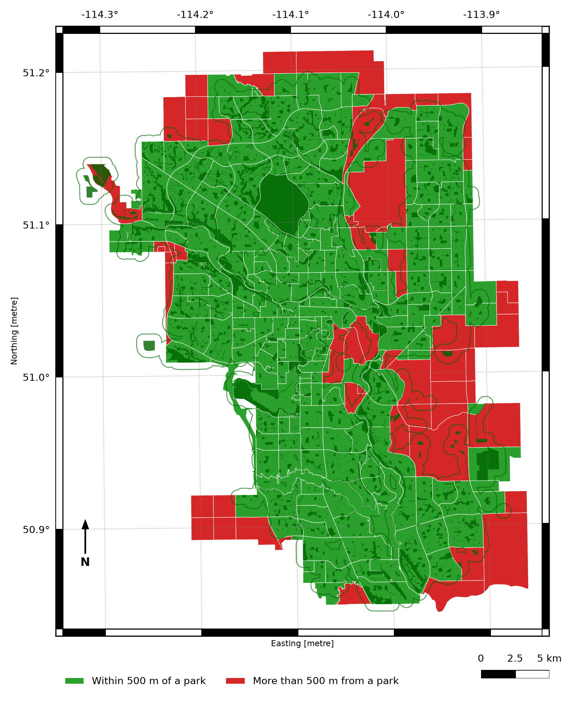
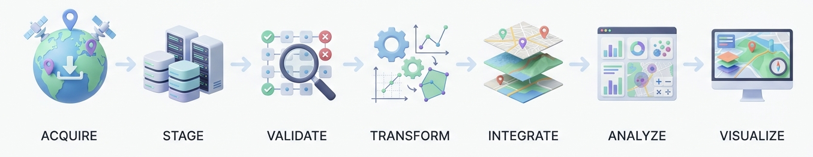

Remark
These lecture notes are in early access and will continue to evolve based on classroom experience and feedback.
1.1. What is Geospatial Data Engineering?#
1.1.1. What Is a GIS?#
A Geographic Information System (GIS) is any system built to capture, store, analyze, and communicate information tied to a location—answering questions like “where is it?” and “what else is nearby?” [Böhner et al., 2014, Kumar et al., 2023]. Traditionally, that system took the form of desktop software such as QGIS or ArcGIS. In this course, we build the same kind of system a different way: as a reproducible Python pipeline.
Every GIS—desktop or code-based—is built from the same five pieces. The table below shows how each piece looks in a traditional, point-and-click GIS versus how it looks in the Python-based approach used throughout this course.
Piece |
Traditional GIS |
In this course |
|---|---|---|
Data |
Shapefiles loaded into a desktop tool |
Vector/raster layers read directly into Python |
Compute |
A desktop workstation or GIS server |
Your laptop, or a JupyterHub/cloud instance for larger jobs |
Software |
Point-and-click tools like QGIS or ArcGIS |
Python libraries—GeoPandas, Rasterio, Shapely, and others introduced later in this section |
Methods |
Manual, menu-driven workflows |
A reproducible pipeline: acquire, clean, transform, analyze, visualize |
People |
Analysts operating the software |
You—writing code that documents every decision instead of clicking through menus |
The tools change, but the underlying idea does not: a GIS is a system for turning location-tagged data into answers. The rest of this section works through what that means in Python.
1.1.2. Where This Chapter Is Headed#


Fig. 1.1 A map answering a real spatial question—“which neighborhoods are more than 500 meters from the nearest park?”—built with the Python tools introduced in this course.#
This is what geospatial data engineering produces: not a table of numbers, but an answer you can see and trust. Somewhere underneath that map sits a pipeline—raw files acquired, cleaned, reprojected into a shared coordinate system, joined to population data, and rendered. By the end of Chapter 3 you will be able to build maps like this one yourself, starting from nothing but raw downloaded files.
The rest of this chapter is about the machinery required to get there: what makes data “geospatial” in the first place, what a geospatial pipeline looks like end to end, and which Python tools do which job. Keep the map above in mind—every concept introduced from here on is a piece of what it takes to build it.
1.1.3. Learning Objectives#
By the end of this section, you should be able to:
Describe a GIS as a system of data, compute, software, methods, and people, and explain how a Python-based pipeline implements each piece.
Define geospatial data and articulate how it differs from ordinary tabular data.
Identify the major application domains that rely on spatial data—urban planning, environmental monitoring, logistics, public health, and others.
Describe the end-to-end geospatial data engineering pipeline: acquisition, storage, transformation, analysis, and visualization.
Name the core Python libraries used throughout this course and explain the role each plays.
Recognize when a problem has a spatial component that warrants geospatial tools.
Section Goal
This section establishes the conceptual foundation for the entire course. You will learn what geospatial data is, why location is a first-class dimension in modern data systems, and how the standard geospatial engineering pipeline connects raw data sources to analytical products. By the end, you will have a clear mental model of where each tool and technique covered in later sections fits into the overall workflow.
1.1.4. What Makes Data “Geospatial”?#
Geospatial data is any data that includes an explicit geographic or locational component—information that tells you where an observation or feature exists on the Earth’s surface. That locational component can take many forms: a pair of latitude and longitude coordinates, a postal address that can be geocoded, a polygon describing the boundary of a county, or a raster grid of satellite-measured surface temperatures.
The critical difference from ordinary tabular data is that spatial attributes obey geometric and topological rules that have no analog in conventional databases. Two rows in a spreadsheet either have equal values or they do not; two polygons may overlap, contain one another, touch at a single edge, or be entirely disjoint. These spatial relationships—along with distance, area, direction, and shape—open an entirely new class of analytical questions.
Example 1.1
Suppose you have a pandas DataFrame of coffee shops with columns name and city. You can group by city or count how many shops share a name, but you cannot answer “which two shops are closest together?”—city is just a category, not a location.
Now add two columns, latitude and longitude. The table looks almost the same, but it has become geospatial: each row now has a position, and positions can be compared geometrically—you can compute the distance between any two shops, find every shop within 1 km of a point, or draw them on a map. That extra layer of geometric meaning, not the number of columns, is what makes data “geospatial.”
1.1.4.1. Why Location Matters#
Location underpins an enormous range of modern data products and decisions:
Urban planning and infrastructure: deciding where to site a new transit station requires integrating population density, land-use zoning, existing transit coverage, and topography—all spatial layers.
Environmental monitoring: tracking wildfire progression or flood extent means querying the overlap between hazard footprints and residential parcels or critical infrastructure.
Public health: identifying which census tracts are underserved by hospitals requires a spatial join between service-area polygons and population data.
Logistics and routing: delivering packages efficiently means solving network problems on a road graph—a spatial data structure.
Remote sensing: satellite and aerial imagery captures continuous spatial variation (vegetation health, land-surface temperature) that must be processed as gridded raster data.
Internet of Things: GPS-equipped devices continuously emit location traces that must be ingested, stored, and queried in real time.
In every case, the where is as important as the what and when. Geospatial data engineering provides the tools to capture, manage, and exploit that locational dimension at scale.
1.1.4.2. Translate a Business Question into a Spatial Question#
A practical way to recognize a spatial problem is to rewrite a broad question as a relationship between locations:
Broad question |
Spatial version |
|---|---|
Which customers are underserved? |
Which customer points are more than 10 km from a service location? |
Where should a clinic be opened? |
Which population areas are outside existing service buffers? |
Which properties are at risk? |
Which parcel polygons intersect the flood-hazard polygon? |
This rewrite identifies the geometry types, spatial predicate, and measurement units needed before any code is written.
Example 1.2
“Which neighborhoods lack easy access to a park?” is a broad question. Rewritten as a spatial question it becomes: “Which houses are more than 500 meters (in a straight line) from the nearest park?” This version already tells you what to measure (distance), between which two things (a house location and a park boundary), and what counts as “far” (500 meters)—enough detail to start writing code, even before you know the specific GeoPandas commands for it.
1.1.5. The Geospatial Data Engineering Pipeline#
Just as a conventional data engineering pipeline moves raw records from source systems into analytical stores, a geospatial data engineering pipeline moves raw spatial data through a series of stages that clean, enrich, integrate, and serve it for analysis and visualization.


Fig. 1.2 The geospatial data engineering pipeline, from acquisition through visualization#
1.1.5.1. Stage 1: Acquisition#
Spatial data arrives from many sources:
Public repositories: government open-data portals (U.S. Census TIGER/Line, data.gov, Copernicus), scientific archives (USGS Earth Explorer, NASA Earthdata).
Web APIs: real-time feeds such as the Overpass API for OpenStreetMap data, or REST services that deliver GeoJSON.
Programmatic download: scripted retrieval of Shapefiles (a common multi-file format for storing geometry and attributes together), GeoPackages, or CSV files with coordinate columns.
Remote sensing: satellite imagery delivered as raster tiles in formats like GeoTIFF or Cloud-Optimized GeoTIFF (COG).
Field surveys: GPS devices and mobile apps collecting point observations with associated attributes.
1.1.5.2. Stage 2: Staging and Format Conversion#
Raw data arrives in many formats—Shapefiles, GeoJSON, CSV with coordinates, GML, KML—and must be staged in a consistent, analysis-ready form. This usually means converting to a canonical format (e.g., GeoPackage or a PostGIS table) and documenting provenance.
1.1.5.3. Stage 3: Validation and Cleaning (Data Carpentry)#
Spatial data is notoriously messy:
Invalid geometries: self-intersecting polygons, unclosed rings, duplicate vertices.
CRS mismatches: layers that appear in different coordinate reference systems cannot be overlaid directly.
Missing or inconsistent attributes: null values, inconsistent field names, type mismatches between layers.
Topology errors: gaps and overlaps between adjacent polygons that should share a boundary.
Detecting and repairing these issues—sometimes called geospatial data carpentry—is a core skill covered throughout this course.
Example 1.3
Two county boundary files are downloaded from different agencies. Plotted on their own, each looks like a normal, reasonably shaped county. But one file stores coordinates as plain latitude/longitude degrees, while the other stores them as meters measured from a fixed reference point. Overlay the two without converting them to the same system first, and the county from the second file appears thousands of kilometers away from the first—not because the data is wrong, but because the two files disagree on what a coordinate means. This is a coordinate reference system (CRS) mismatch, and it is one of the most common early bugs in a geospatial pipeline.
1.1.5.4. Stage 4: Transformation and Reprojection#
Analysis often requires transforming geometries: reprojecting layers to a common CRS, buffering features to create service-area polygons, simplifying complex coastlines for web display, or dissolving individual parcels into neighborhood polygons. These operations change the geometry or coordinate representation without altering the underlying real-world features.
1.1.5.5. Stage 5: Integration#
Most spatial analyses combine data from multiple sources. A neighborhood equity analysis might join census demographic data (tabular) to census tract boundaries (vector polygons), then overlay those tracts with hospital service areas and park buffers. Integration requires matching coordinate reference systems, aligning attribute schemas, and resolving conflicting or overlapping features.
1.1.5.6. Stage 6: Analysis#
With clean, integrated data, we can answer spatial questions using geometric operations, spatial predicates, joins, and overlay analysis. These operations—introduced conceptually here and covered in depth in Chapter 3—are the heart of GIS-style spatial analysis implemented in Python.
1.1.5.7. Stage 7: Visualization#
Results are communicated through static thematic maps (using matplotlib and GeoPandas) and interactive web maps (using Folium or Leaflet). Effective cartographic choices—projection, color ramp, symbol size, basemap—are as important as the underlying analysis.
This routine checks how much data arrived, what attributes exist, how coordinates are interpreted, which geometry types are present, and whether the layer is safe to use.
1.1.6. Core Python Libraries#
The Python geospatial ecosystem is rich and interoperable. The table below summarizes the libraries you will encounter throughout this course.
Library |
Role |
|---|---|
GeoPandas |
Extends pandas with a |
Shapely |
Geometric operations on individual features: buffer, intersection, union, distance, validity checks |
Fiona |
Low-level OGR wrapper; fine-grained control over reading and writing spatial formats |
PyProj |
Coordinate transformations between CRS using the PROJ library |
psycopg2 |
PostgreSQL adapter; used to connect Python to PostGIS databases |
SQLAlchemy + GeoAlchemy2 |
ORM layer for PostGIS, enabling Python-native spatial queries |
Folium |
Python wrapper for Leaflet.js; creates interactive web maps from spatial data |
GDAL/OGR (via rasterio and Fiona) |
Low-level raster and vector I/O; the foundation underlying most higher-level libraries |